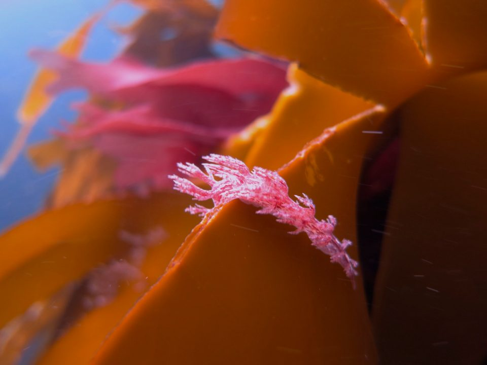

Swanage 25th May 2012

Diving
Day 1: Saturday 26 May
It was too windy to dive on Saturday but it was still a glorious day so we explored the local area - including walking, swimming and the local pubs...
We even made friends with the local donkeys!
Day 2: Sunday 27 May
Dive 1: Fleur de Lys
An early start for our first dive of the weekend (and the season for some of us). We descended down a shot line onto the Fleur de Lys - a fishing trawler that sank in 2000 and sits at about 13 metres. There was a strong current, and the visibility wasn't great which made it pretty challenging. Most people didn't stay on the wreck for long and moved off to do a drift dive across the sea bed.
Dive 2: Pier
Some people decided to do a second dive in the morning under Swanage pier. This might not sound that exciting, but even at 4 metres you can find all sorts of interesting things including spider crabs, tompot blenny, anemones, sponges, lobster and plenty of fish.
Dive 3: Valentine Tanks
The final dive of the day was another boat dive to see the valentine tanks which sit at about 15 metres. Luckily it was much calmer than the morning, so this was a much more relaxing dive. The valentine tanks were designed and built in the second world war and were meant to float - but they didn't! They sank in 1942 but are still fairly intact, and they play home to all sorts of sea life. We saw a massive conger eel, crabs, lobster, a massive cuttlefish and lots of fish.
Who came
- Charlie
- Claire S
- Boggie
- Sarah
- Phil
- James
- Claire B
- Emily
- Gareth
- Rachel
- Trevor
- Aidan
Accommodation
We stayed at the Swanage Bay View Holiday Park.